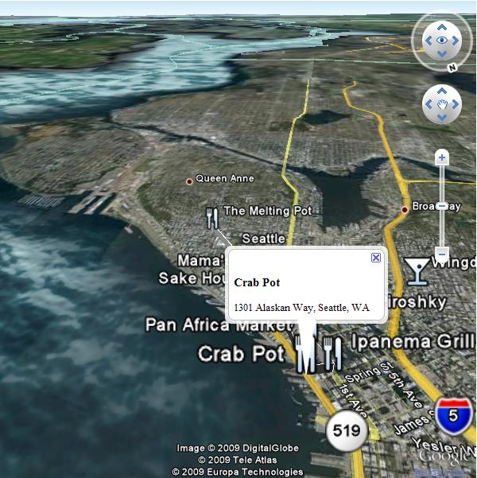
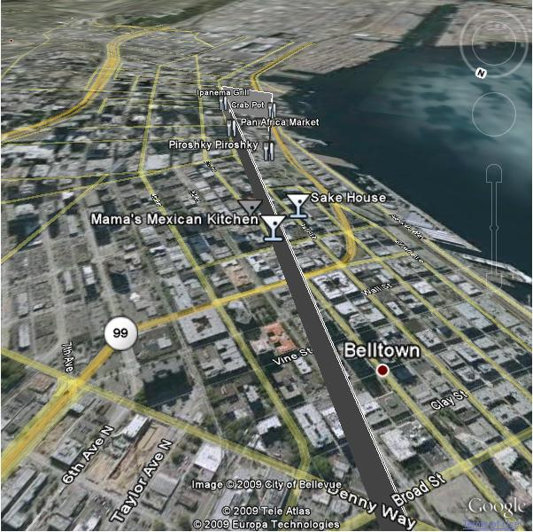

©2010 Google -
Code Home -
Terms of Service -
Privacy Policy -
Site Directory
Google Code offered in:
English -
Español -
日本語 -
한국어 -
Português -
Pусский -
中文(简体) -
中文(繁體)
This tutorial is intended for developers who are familiar with PHP/MySQL, and want to learn how to use the Google Earth API with a MySQL database. After completing this tutorial, you will have a Google Earth page based off a database of places. The map will differentiate between two types of places—restaurants and bars—by giving their placemarks distinguishing icons. A balloon with name and address information will display above a marker when clicked.
This article is based on an earlier article for the Google Maps API by Pamela Fox and Lary Stucker. If you've created a Map using that article, or a similar article on Using PHP and MySQL to Create KML, you can skip to Combining with Maps API or KML. The first three sections are same across these articles. In fact, if you used the Maps article, you can add Earth by adding one line of code.
When you create the MySQL table, to pay particular
attention to the lat and lng attributes.
With the current zoom capabilities of Google Earth, only
need 6 digits of precision after the decimal are required. To keep the storage
space required for our table at a minimum, specify that the
lat and lng attributes are floats of size
(10,6), allowing the fields to store 6 digits after the decimal, and up to 4 digits before the decimal (e.g. -123.456789).
Your table should also have an id attribute to serve as
the primary key, and a type attribute to distinguish
between restaurants and bars.
Note: This tutorial uses location data that already has the latitude and longitude information needed to plot corresponding markers. If you're trying to use your own data that doesn't yet have that information, use a batch geocoding service to convert the addresses into latitudes/longitudes. Some sites make the mistake of geocoding addresses each time a page loads, but doing so will result in slower page loads and unnecessary repeat geocodes. It's always better to hardcode the latitude/longitude information when possible. This link contains a good list of geocoders: http://groups.google.com/group/Google-Maps-API/web/resources-non-google-geocoders
If you prefer interacting with your database through the phpMyAdmin interface, here's a screenshot of the table creation.

If you don't have access to phpMyAdmin or prefer using SQL commands instead, here's the SQL statement that creates the table (phpsqlajax_createtable.sql):
CREATE TABLE `markers` ( `id` INT NOT NULL AUTO_INCREMENT PRIMARY KEY , `name` VARCHAR( 60 ) NOT NULL , `address` VARCHAR( 80 ) NOT NULL , `lat` FLOAT( 10, 6 ) NOT NULL , `lng` FLOAT( 10, 6 ) NOT NULL , `type` VARCHAR( 30 ) NOT NULL ) ENGINE = MYISAM ;
After creating the table, it's time to populate it with data. Sample data for 10 Seattle places are provided below. In phpMyAdmin, you can use the IMPORT tab to import various file formats, including CSV (comma-separated values). Microsoft Excel and Google Docs Spreadsheets both export to CSV format, so you can easily transfer data from spreadsheets to MySQL tables by exporting then importing CSV files.
Here's the sample data in CSV format (phpsqlajax_data.csv):
Pan Africa Market,"1521 1st Ave, Seattle, WA",47.608941,-122.340145,restaurant Buddha Thai & Bar,"2222 2nd Ave, Seattle, WA",47.613591,-122.344394,bar The Melting Pot,"14 Mercer St, Seattle, WA",47.624562,-122.356442,restaurant Ipanema Grill,"1225 1st Ave, Seattle, WA",47.606366,-122.337656,restaurant Sake House,"2230 1st Ave, Seattle, WA",47.612825,-122.34567,bar Crab Pot,"1301 Alaskan Way, Seattle, WA",47.605961,-122.34036,restaurant Mama's Mexican Kitchen,"2234 2nd Ave, Seattle, WA",47.613975,-122.345467,bar Wingdome,"1416 E Olive Way, Seattle, WA",47.617215,-122.326584,bar Piroshky Piroshky,"1908 Pike pl, Seattle, WA",47.610127,-122.342838,restaurant
Here's a screenshot of the import options used to transform this CSV into table data:

If you'd rather not use the phpMyAdmin interface, here are the SQL statements that accomplish the same results ( phpsqlajax_data.sql):
INSERT INTO `markers` (`name`, `address`, `lat`, `lng`, `type`) VALUES ('Pan Africa Market', '1521 1st Ave, Seattle, WA', '47.608941', '-122.340145', 'restaurant');
INSERT INTO `markers` (`name`, `address`, `lat`, `lng`, `type`) VALUES ('Buddha Thai & Bar', '2222 2nd Ave, Seattle, WA', '47.613591', '-122.344394', 'bar');
INSERT INTO `markers` (`name`, `address`, `lat`, `lng`, `type`) VALUES ('The Melting Pot', '14 Mercer St, Seattle, WA', '47.624562', '-122.356442', 'restaurant');
INSERT INTO `markers` (`name`, `address`, `lat`, `lng`, `type`) VALUES ('Ipanema Grill', '1225 1st Ave, Seattle, WA', '47.606366', '-122.337656', 'restaurant');
INSERT INTO `markers` (`name`, `address`, `lat`, `lng`, `type`) VALUES ('Sake House', '2230 1st Ave, Seattle, WA', '47.612825', '-122.34567', 'bar');
INSERT INTO `markers` (`name`, `address`, `lat`, `lng`, `type`) VALUES ('Crab Pot', '1301 Alaskan Way, Seattle, WA', '47.605961', '-122.34036', 'restaurant');
INSERT INTO `markers` (`name`, `address`, `lat`, `lng`, `type`) VALUES ('Mama\'s Mexican Kitchen', '2234 2nd Ave, Seattle, WA', '47.613975', '-122.345467', 'bar');
INSERT INTO `markers` (`name`, `address`, `lat`, `lng`, `type`) VALUES ('Wingdome', '1416 E Olive Way, Seattle, WA', '47.617215', '-122.326584', 'bar');
INSERT INTO `markers` (`name`, `address`, `lat`, `lng`, `type`) VALUES ('Piroshky Piroshky', '1908 Pike pl, Seattle, WA', '47.610127', '-122.342838', 'restaurant');
At this point, you should have a table named markers
filled with sample data. You now need to write some PHP statements to
export the table data into an XML format that our map can retrieve
through asynchronous JavaScript calls. If you've never written PHP to
connect to a MySQL database, you should visit php.net and read up
on mysql_connect, mysql_select_db, my_sql_query, and mysql_error.
Note: Some tutorials may suggest actually writing your map page as a PHP file and outputting JavaScript for each marker you want to create, but that technique can be problematic. By using an XML file as an intermediary between our database and our Google Map, it makes for a faster initial page load, a more flexible map application, and easier debugging. You can independently verify the XML output from the database and the JavaScript parsing of the XML. And at any point, you could even decide to eliminate your database entirely and just run the map based on static XML files.
First, you should put your database connection information in a separate file. This is generally a good idea whenever you're using PHP to access a database, as it keeps your confidential information in a file that you won't be tempted to share. In the developer forums, we've occasionally had people accidentally publish their database connection information when they were just trying to debug their XML-outputting code. The file should look like this, but with your own database information filled in (phpsqlajax_dbinfo.php):
<? $username="username"; $password="password"; $database="username-databaseName"; $server="server"; ?>
Check your configuration or try initializing a
domxml_new_doc() to determine if your server's PHP has
dom_xml functionality on. If you do have access to
dom_xml functions, you can use them to create XML nodes,
append child nodes, and output an XML document to the screen. The
dom_xml functions take care of subtleties such as
escaping special entities in the XML, and make it easy to create XML
with more complex structures.
In the PHP, first initialize a new XML document and create the
markers parent node. Then connect to the database, execute a
SELECT * (select all) query on the markers table,
and iterate through the results. For each row in the table (each location), create a new XML node with the
row attributes as XML attributes, and append it to the parent node. Then dump the XML to the screen.
Note: If your database contains international characters or you otherwise need to force UTF-8 output, you can use utf8_encode on the outputted data.
The PHP file that does all that is shown below (phpsqlajax_genxml.php):
<?php
require("phpsqlajax_dbinfo.php");
// Start XML file, create parent node
$doc = domxml_new_doc("1.0");
$node = $doc->create_element("markers");
$parnode = $doc->append_child($node);
// Opens a connection to a MySQL server
$connection=mysql_connect ($server, $username, $password);
if (!$connection) {
die('Not connected : ' . mysql_error());
}
// Set the active MySQL database
$db_selected = mysql_select_db($database, $connection);
if (!$db_selected) {
die ('Can\'t use db : ' . mysql_error());
}
// Select all the rows in the markers table
$query = "SELECT * FROM markers WHERE 1";
$result = mysql_query($query);
if (!$result) {
die('Invalid query: ' . mysql_error());
}
header("Content-type: text/xml");
// Iterate through the rows, adding XML nodes for each
while ($row = @mysql_fetch_assoc($result)){
// ADD TO XML DOCUMENT NODE
$node = $doc->create_element("marker");
$newnode = $parnode->append_child($node);
$newnode->set_attribute("name", $row['name']);
$newnode->set_attribute("address", $row['address']);
$newnode->set_attribute("lat", $row['lat']);
$newnode->set_attribute("lng", $row['lng']);
$newnode->set_attribute("type", $row['type']);
}
$xmlfile = $doc->dump_mem();
echo $xmlfile;
?>
If you don't have access to PHP's dom_xml functions,
then you can simply output the XML with the echo
function. When using just the echo function, you'll need
to use a helper function (e.g. parseToXML)
that will correctly encode a few special entities (<,>,",') to be XML-friendly.
In the PHP, first connect to the database and execute the
SELECT * (select all) query on the markers table. Then
echo out the parent markers node, and iterate through the
query results. For each row in the table (each location), you need to
echo out the XML node for that marker, sending the name and address
fields through the parseToXML function first in case
there are any special entities in them. Finish the script by echoing
out the closing markers tag.
Note: If your database contains international characters or you otherwise need to force UTF-8 output, you can use utf8_encode on the outputted data.
The PHP file that does all this is shown below (phpsqlajax_genxml2.php):
<?php
require("phpsqlajax_dbinfo.php");
function parseToXML($htmlStr)
{
$xmlStr=str_replace('<','<',$htmlStr);
$xmlStr=str_replace('>','>',$xmlStr);
$xmlStr=str_replace('"','"',$xmlStr);
$xmlStr=str_replace("'",''',$xmlStr);
$xmlStr=str_replace("&",'&',$xmlStr);
return $xmlStr;
}
// Opens a connection to a MySQL server
$connection=mysql_connect ($server, $username, $password);
if (!$connection) {
die('Not connected : ' . mysql_error());
}
// Set the active MySQL database
$db_selected = mysql_select_db($database, $connection);
if (!$db_selected) {
die ('Can\'t use db : ' . mysql_error());
}
// Select all the rows in the markers table
$query = "SELECT * FROM markers WHERE 1";
$result = mysql_query($query);
if (!$result) {
die('Invalid query: ' . mysql_error());
}
header("Content-type: text/xml");
// Start XML file, echo parent node
echo '<markers>';
// Iterate through the rows, printing XML nodes for each
while ($row = @mysql_fetch_assoc($result)){
// ADD TO XML DOCUMENT NODE
echo '<marker ';
echo 'name="' . parseToXML($row['name']) . '" ';
echo 'address="' . parseToXML($row['address']) . '" ';
echo 'lat="' . $row['lat'] . '" ';
echo 'lng="' . $row['lng'] . '" ';
echo 'type="' . $row['type'] . '" ';
echo '/>';
}
// End XML file
echo '</markers>';
?>
First, check your configuration and make sure you are using PHP5. If you aren't, then use one of the previous techniques.
In PHP, first initialize a new XML document and create the markers parent node. Then connect to the database, execute a SELECT * (select all) query on the markers table, and iterate through the results. For each row in the table (each location), create a new XML node with the row attributes as XML attributes, and append it to the parent node. Then dump the XML to the screen.
Note: If your database contains international characters or you otherwise need to force UTF-8 output, you can use utf8_encode on the outputted data.
The PHP file that does all this is shown below (phpsqlajax_genxml3.php):
<?php
require("phpsqlajax_dbinfo.php");
// Start XML file, create parent node
$dom = new DOMDocument("1.0");
$node = $dom->createElement("markers");
$parnode = $dom->appendChild($node);
// Opens a connection to a MySQL server
$connection=mysql_connect ($server, $username, $password);
if (!$connection) { die('Not connected : ' . mysql_error());}
// Set the active MySQL database
$db_selected = mysql_select_db($database, $connection);
if (!$db_selected) {
die ('Can\'t use db : ' . mysql_error());
}
// Select all the rows in the markers table
$query = "SELECT * FROM markers WHERE 1";
$result = mysql_query($query);
if (!$result) {
die('Invalid query: ' . mysql_error());
}
header("Content-type: text/xml");
// Iterate through the rows, adding XML nodes for each
while ($row = @mysql_fetch_assoc($result)){
// ADD TO XML DOCUMENT NODE
$node = $dom->createElement("marker");
$newnode = $parnode->appendChild($node);
$newnode->setAttribute("name",$row['name']);
$newnode->setAttribute("address", $row['address']);
$newnode->setAttribute("lat", $row['lat']);
$newnode->setAttribute("lng", $row['lng']);
$newnode->setAttribute("type", $row['type']);
}
echo $dom->saveXML();
?>
Call the PHP script you created above from the browser to make sure it's producing
valid XML. If you suspect there's a problem with connecting to your
database, you may find it easier to debug if you remove the line in
the file that sets the header to the text/xml content
type, as that usually causes your browser to try to parse XML and may
make it difficult to see your debugging messages.
If the script is working correctly, you will see XML output like this (phpsqlajax_expectedoutput.xml):
<markers> <marker name="Pan Africa Market" address="1521 1st Ave, Seattle, WA" lat="47.608940" lng="-122.340141" type="restaurant"/> <marker name="Buddha Thai & Bar" address="2222 2nd Ave, Seattle, WA" lat="47.613590" lng="-122.344391" type="bar"/> <marker name="The Melting Pot" address="14 Mercer St, Seattle, WA" lat="47.624561" lng="-122.356445" type="restaurant"/> <marker name="Ipanema Grill" address="1225 1st Ave, Seattle, WA" lat="47.606365" lng="-122.337654" type="restaurant"/> <marker name="Sake House" address="2230 1st Ave, Seattle, WA" lat="47.612823" lng="-122.345673" type="bar"/> <marker name="Crab Pot" address="1301 Alaskan Way, Seattle, WA" lat="47.605961" lng="-122.340363" type="restaurant"/> <marker name="Mama's Mexican Kitchen" address="2234 2nd Ave, Seattle, WA" lat="47.613976" lng="-122.345467" type="bar"/> <marker name="Wingdome" address="1416 E Olive Way, Seattle, WA" lat="47.617214" lng="-122.326584" type="bar"/> <marker name="Piroshky Piroshky" address="1908 Pike pl, Seattle, WA" lat="47.610126" lng="-122.342834" type="restaurant"/> </markers>
Once the XML is working in the browser, it's time to move on to actually creating your placemarks with JavaScript. If you have never used the Earth API, please try some of the basic examples in the documentation to make sure you understand the basics of developing with the Earth API.
To load the XML file into our page, you can take advantage of the
Maps API function GDownloadUrl. This will require loading the Maps API as well.
GDownloadURL is
a wrapper for the XMLHttpRequest that's used to request
an XML file from the server where the HTML page resides. The first
parameter to GDownloadURL is the path to your
file—it's usually easiest to have the XML file in the same
directory as the HTML so that you can just refer to it by filename.
The second parameter to GDownloadURL is the function
that's called when the XML is returned to the JavaScript.
Note: It's important to know that
GDownloadURL is asynchronous—the callback function
won't be called as soon as you invoke GDownloadURL. The
bigger your XML file, the longer it may take. Don't put any code after
GDownloadURL that relies on the placemarks existing
already—put it inside the callback function instead.
In the callback function, you need to find all the "marker"
elements in the XML, and iterate through them. For each marker element
you find, retrieve the name, address, type, and lat/lng attributes
and pass them to createPlaceMark, which returns a placemark
that you can add to Earth.
GDownloadUrl("phpsqlajax_genxml3.php", function(data) {
var xml = GXml.parse(data);
var markers = xml.documentElement.getElementsByTagName("marker");
for (var i = 0; i < markers.length; i++) {
var name = markers[i].getAttribute("name");
var address = markers[i].getAttribute("address");
var type = markers[i].getAttribute("type");
var lat = markers[i].getAttribute("lat");
var lng = markers[i].getAttribute("lng");
createPlacemark(name,address,type,lat,lng);
}
});
Place all your placemark creation code in a createPlacemark
function.
This will create a point placemark, with a simple description and an icon based on the type variable. When the placemark is clicked, its name and description will pop up as a balloon.
function createPlacemark(name,address,type,lat,lng){
var placemark = ge.createPlacemark('');
placemark.setName(name);
placemark.setDescription(address);
var point = ge.createPoint('');
point.setLatitude(parseFloat(lat));
point.setLongitude(parseFloat(lng));
placemark.setGeometry(point);
placemark.setStyleSelector(createIcon(type));
ge.getFeatures().appendChild(placemark);
var icon = ge.createIcon('');
if(type=="bar"){
icon.setHref('http://maps.google.com/mapfiles/kml/pal2/icon27.png');
} else{
icon.setHref('http://maps.google.com/mapfiles/kml/pal2/icon63.png');
}
var style = ge.createStyle('');
style.getIconStyle().setIcon(icon);
}
}
Here's the web page that ties the markers, icons, and XML together.
When the page loads, the init function is called. This
function sets up Earth and then calls initCallback which calls GDownloadUrl.
The full HTML that accomplishes this is shown below (phpsqlajax_map.htm):
<!DOCTYPE html PUBLIC "-//W3C//DTD XHTML 1.0 Strict//EN" "http://www.w3.org/TR/xhtml1/DTD/xhtml1-strict.dtd">
<html xmlns="http://www.w3.org/1999/xhtml">
<head>
<meta http-equiv="content-type" content="text/html; charset=utf-8"/>
<title>Google Earth API + mySQL/PHP Example</title>
<script src="http://www.google.com/jsapi?key=ADDYourOwnKeyHere"> </script>
<script>
var ge;
google.load("earth", "1");
google.load("maps", "2");
function init() {
google.earth.createInstance('map3d', initCallback, failureCallback);
}
function initCallback(instance){
ge = instance;
ge.getWindow().setVisibility(true);
var la = ge.createLookAt('');
la.set(47.616319, -122.349992, 25, ge.ALTITUDE_RELATIVE_TO_GROUND,
-10, 60, 4000);
ge.getView().setAbstractView(la);
ge.getNavigationControl().setVisibility(ge.VISIBILITY_AUTO);
ge.getLayerRoot().enableLayerById(ge.LAYER_BORDERS, true);
ge.getLayerRoot().enableLayerById(ge.LAYER_ROADS, true);
GDownloadUrl("phpsqlajax_genxml3.php", function(data) {
var xml = GXml.parse(data);
var markers = xml.documentElement.getElementsByTagName("marker");
for (var i = 0; i < markers.length; i++) {
var name = markers[i].getAttribute("name");
var address = markers[i].getAttribute("address");
var type = markers[i].getAttribute("type");
var lat = markers[i].getAttribute("lat");
var lng = markers[i].getAttribute("lng");
createPlacemark(name,address,type,lat,lng);
}
});
}
function failureCallback(errorCode) {
}
function createPlacemark(name,address,type,lat,lng){
var placemark = ge.createPlacemark('');
placemark.setName(name);
var point = ge.createPoint('');
point.setLatitude(parseFloat(lat));
point.setLongitude(parseFloat(lng));
placemark.setGeometry(point);
placemark.setStyleSelector(createIcon(type));
ge.getFeatures().appendChild(placemark);
placemark.setDescription(address);
if(type=="bar"){
icon.setHref('http://maps.google.com/mapfiles/kml/pal2/icon27.png');
} else{
icon.setHref('http://maps.google.com/mapfiles/kml/pal2/icon63.png');
}
var style = ge.createStyle('');
style.getIconStyle().setIcon(icon);
}
</script>
</head>
<body onload="init()">
<div id="map3d" style="width: 500px; height: 500px"></div>
</body>
</html>
Your page should look like this when it's done:

On the other hand, if you used the article Using PHP/MySQL with Google Maps to create your database and a Google Map, you can add one line of code to your web page to add in the Earth API:
map.addMapType(G_SATELLITE_3D_MAP);
That will put an Earth map type on your map, and when you click on it, your markers will show up in Earth
If you used Using PHP and MySQL to create KML, then you can easily create a map that loads in the KML:
var ge;
google.load("earth", "1");
function init() {
google.earth.createInstance('map3d', initCallback, failureCallback);
}
function initCallback(instance) {
ge = instance;
ge.getWindow().setVisibility(true);
ge.getNavigationControl().setVisibility(ge.VISIBILITY_AUTO);
ge.getLayerRoot().enableLayerById(ge.LAYER_BORDERS, true);
ge.getLayerRoot().enableLayerById(ge.LAYER_ROADS, true);
function finished(object) {
if (!object) {
setTimeout(function() {
alert('Bad or null KML.');
}, 0);
return;
}
ge.getFeatures().appendChild(object);
var la = ge.createLookAt('');
la.set(37.77976, -122.418307, 25, ge.ALTITUDE_RELATIVE_TO_GROUND,
180, 60, 500);
ge.getView().setAbstractView(la);
}
var url = 'http://example.com/phpmysql_kmlnl.kml';
google.earth.fetchKml(ge, url, finished);
}
function failureCallback(errorCode) {
}
That would look something like this:
There's a lot more you can do with the data from the database. For instance, you can:
And much more. The more data you have, the more you can do with it.